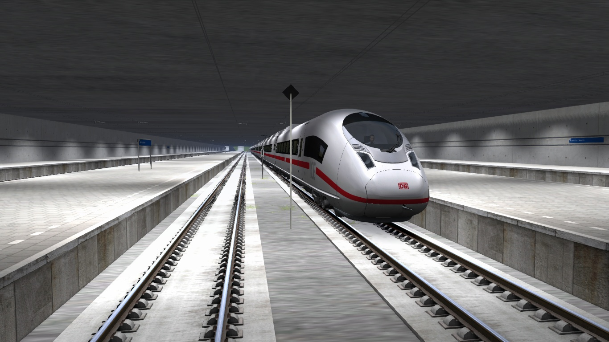

|

Train Simulator Classic - Project Philippine Railways High Speed (Fictional) (Mark's Samu't Sari TV Exclusive)
A fictional high speed route in the Philippines built by myself, to feature a Train Simulator
classic route outside the featured countries worldwide. This route is a network-based, spanning 4405 km,
with 85 stations.
Only the route template is created by myself. There are no scenery, only railway related infrastructure are visible.
What's new in 04 April 2023 Version:
- 1. Completed Section 1 - Manila South - San Pablo.
Requirements (Not included on this route and must be downloaded or purchased separately):
| Provider |
Product |
Route/Asset |
Year Released |
Links/Remarks |
| ChrisTrains |
RailSimulator |
Christrains Station Objects and Scenery Pack with ETCS Magnets |
N/A |
ChrisTrains Website |
| DTG |
LeedsManchester |
Leeds - Manchester Route |
2022 |
Steam |
| DTG |
Academy |
Academy |
2015 |
Included in Train Simulator Classic when purchased |
| DTG |
LGVMedSouth |
LGV: Marseille - Avignon |
2016 |
Steam |
| DTG |
WCMLSouth |
West Coast Mainline South |
2020 |
Steam |
| Kuju |
RailSimulator |
EU Loco and Asset Pack |
2009 |
Steam
(Note: Included on some routes sold on Steam) |
| RSC |
HamburgHannover |
Hamburg - Hannover Route |
2013 |
Steam |
| RSC |
KentHighSpeed |
London Faversham High Speed |
2013 |
Steam |
| RSSLO |
RSSLO_Tirol_Austria |
Tirol: Brenner - Kufstein |
2019 |
Steam
(Note: Developer website not compatible) |
| Union Workshop |
GuiGuangHSR |
Guiguang High Speed |
2019 |
Steam |
| Union Workshop |
TohukuHSR |
Tohuku High Speed and Mainline |
2022 |
Steam |
| RSC |
UKLEDSignals01 |
Railworks UK LED Signals |
N/A |
Available on some routes sold on Steam |
| JustTrains |
CommonLibrary |
JustTrains Common Library |
N/A |
Available on some routes sold on Steam |
| DTG |
KarlsruheStrasbourgSignals |
Bahnstrecke - Karlsruhe - Strasbourg |
2022 |
Steam |
Note: Current versions might be discontinued if future versions are updated. Also, some
requirements might be unavailable or retired.
It is strongly recommended to run in 64-bit version.
Download:
Google Drive | Size: 3.33GB | Format: ZIP archive
Tags: Railroad Simulation
Year: Q2 2023: April 2023
|
![[page logo]](samu'tsarilogo.png)